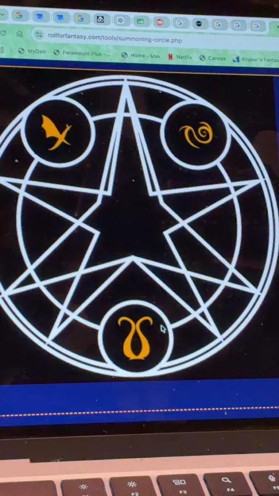

Cause Fear

You speak a word of power that causes a creature you can see within range to become frightened for the duration. If the target can see you, it must succeed on a Wisdom saving throw or drop whatever it is holding and become frightened for the duration. The spell has no effect on undead or constructs.
Jump
You leap high into the air, using a quick burst of energy. You can jump up to 20 feet horizontally and 10 feet vertically.
Comprehend Languages

You gain the ability to understand any spoken language you hear for the duration of the spell.
Dispel Magic

When cast, any magic near the target is dispelled.
Bless

You bless up to three creatures of your choice within range. Whenever a target makes an attack roll or a saving throw before the spell ends, the target can roll a d4 and add the number rolled to the attack roll or saving throw.